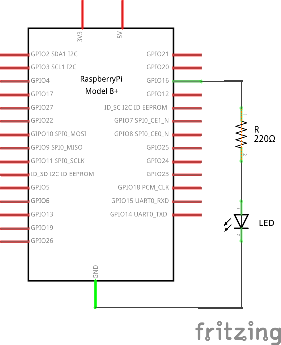
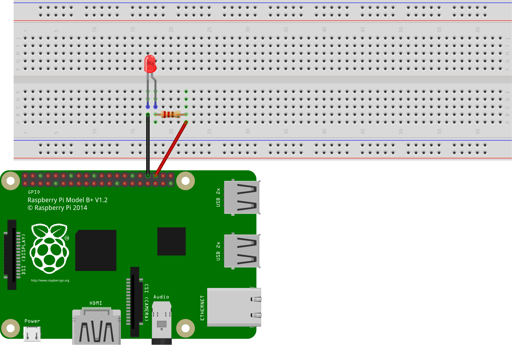
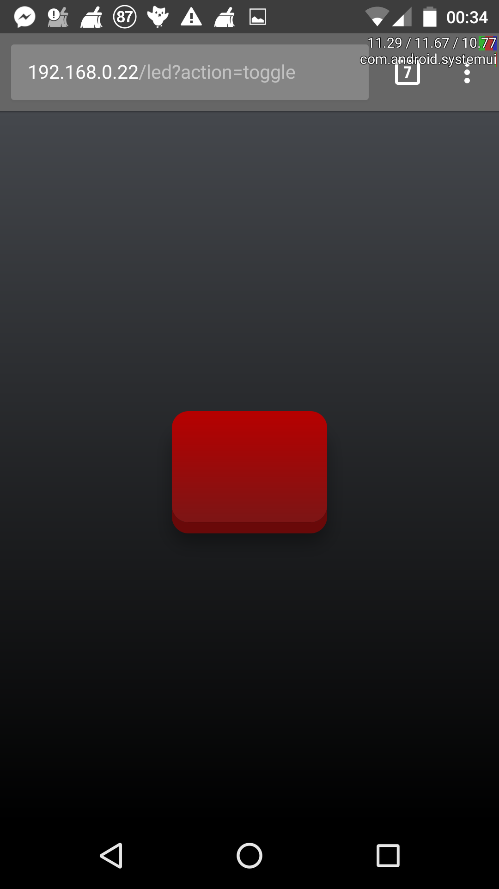

Preamble
No, I'm afraid this post is not on how to build your army of toy soldiers. If the disappointment hasn't stopped you from reading any further, what I will discuss here is something simpler and more peaceful, involving general electronics single board computers, LEDs, Python, web servers and web applications. All in just one place!
I will try to introduce the fundamental concepts of IoT by example, and I will do so by sharing my recent hands-on experience with my first Raspberry Pi, and how this has led me to get to know of fascinating technologies of the modern era. If your main objective is still to build an army of toy soldiers, this is definitely a first step (however you should consider using technology for better purposes, really!).
I will try not to give much for granted, but of course I will have to draw a line at some point, or this post would have never been finished! The subject is software, but it is also hardware, for the former would make little sense without the latter.
The approach will be very practical. We will start with a concrete problem, and we shall see how to solve it, both from a hardware and a software perspective.
What's IoT?
Can you eat it? Well, although your are free of munching on a breadboard if you really want to, IoT, as you probably know already, stands for Internet of Things. This term is used to indicate the inter-networking of physical devices (the things) that are equipped with electronics, sensors, motors etc.. and that communicate information with each other, sometimes taking actions based on the received inputs. In this sense, every-day life devices, like the fridges or the washing machines in our homes, or vending machines, or cars even, become smart.
Even though the first example of smart things appeared in the 1982 (and you can surely consider the toy army of Toy Story as an example of IoT in early animation movies), it is around 2016 that the IoT has evolved greatly, and the key aspect is the almost ubiquitous availability of wireless networks that allow an increasing pool of diverse devices to communicate with one another.
The IoT example of this post is somewhat a classic, but that will hopefully give you a rough idea of what the IoT is also about, in case this is the first time that you came across it. It is also quite simple and with a contained cost, but nonetheless will spawn many interesting connections with some fascinating modern technologies.
The Project
So what is exactly the project described in this post about? The idea is to turn some LEDs on and off by sending commands to a Raspberry Pi through a web page. This might seem quite a trivial project, but it has given me the opportunity to refresh some rusty knowledge of electronics that dated back to my undergraduate years, as well as learn a great deal of new things from the software side too.
The Hardware
In this first part I will describe all the hardware that is necessary for the project. The main one is, I would say, a single-board computer like a Raspberry Pi. In my case, I'm using a Raspberry Pi 3 Model B running the Raspbian OS. To turn an LED on and off we will use one of the GPIO pins. For commodity, I will also use a T-cobbler to connect all the GPIO pins on a breadboard, where the rest of the circuit will be assembled. All that we still need are a couple of jumper wires, a 220 Ω resistor and an LED of your favourite colour. To summarise, here is the minimum required:
- 1x Raspberry Pi
- 1x breadboard
- 1x T-cobbler and a bus cable (alternatively 2x male-to-female jumper wires)
- 2x male-to-male jumper wires
- 1x 220 Ω resistor
- 1x LED (about 20 mA max current)
The GPIO Pins
Before looking at the circuit, it is probably best to mention a few facts about the Raspberry Pi. In particular, the key part here is the set of GPIO pins that it provides.
The General Purpose Input-Output pins represent, as the name itself suggests, a way to connect to external devices in order to send commands to and from the Raspberry Pi. Some of these can be set to work as input or output, and can be set either high (3.3 V or a logic 1) or low (0 V or a logic 0). Some pins can be used together for other purposes, like communicating with another device through a Serial Peripheral Interface (SPI), attaching LCD screen through the Display Parallel Interface (DPI) etc.... Good references for the Raspberry Pi GPIO pins are this website and the Broadcom BCM2835 ARM Peripherals manual.
From the software side, the pins can be conveniently configured and controlled
by means of the RPi Python module. The thing to be mindful of is that there are
a bunch of different naming conventions for the pins on the Raspberry Pi. The
main ones, to use a terminology proper of the RPi module, is BOARD and BCM.
The former is a pin numbering that reflects the physical location of the pins on
the PCB. Pin number one is on the top-left corner and gives a 3.3 V fixed
output. Pin 2 is the one to its right, Pin 3 is the one below it, and so forth.
The latter is the numbering convention used in the Broadcom manual.
The Circuit
Here is the schematic of the circuit that we want to build.
 The schematic of the circuit, showing all the components used for this project.
As I have already mentioned, I prefer using a T-cobbler to connect all the GPIO pins to the breadboard. In case you are not using one, this is what your breadboard should look like this picture.
 Another schematic representation of the circuit, showing how the components are physically connected with each other on the breadboard and the Raspberry Pi 3 Model B.
Where did the magic number 220 Ω come from? The explanation is very simple and essentially based on Ohm's law. Across a resistor \(R\) to which a voltage difference of \(V\) is applied, the current flowing through it is given by
An LED is a diode, i.e. a p-n junction, that is capable of emitting light. In forward bias, an order-one approximation of a diode is given by a small resistor (order of 10 Ω) in series with a voltage generator (of about -0.67 V). The manufacturer of the LED usually provides the maximum current that the diode can withstand. In the case of common LEDs, this value is around 20 mA. Considering that, when a GPIO pin is on, it will provide 3.3 V to our circuit, in order not to burn our LED we need to use a resistor of resistance \(R\) given by the inequality
which yields
For a better estimate, we can look at the V-I chart provided by the manufacturer, which would probably give us a minimum value closer to 200 Ω. Anything below and you might risk frying your LED. Using a way bigger resistor, however, would starve it of current and it would not turn on at all. But with 220 Ω we should be perfectly fine (and safe!).
The Software
Now that we have assembled the required hardware, it is time to see how to control it. What we have done so far is to connect the Raspberry Pi with a very simple one-wire device, i.e. an LED. The IoT is the possibility of controlling a device from the internet, anywhere in the world, with the actual device that we want to control possibly miles and miles away from us.
What we now need is then a simple interface, accessible from the internet, that allows us to control the LED. Let's see how to create such interface, step-by-step.
But before we go any further, let's have a look, like we did with the hardware part, at all that we will need.
- Python (2.7 or later; note that the project has been tested with Python2.7 and it might have to be adapted slightly to work with Python3)
- a web server e.g. Apache2
- a text editor of your choice.
Yep, that's all.
The RPi Python Module
On Raspbian there is a pretty simple way to control the GPIO pin that comes already bundled with the OS. I'm talking about the RPi Python module. For the simple task that we want to achieve here, RPi exposes all the features that we need. However, keep in mind that more advanced tasks, like real-time applications, cannot be solved by this module. This is not just because it is a Python module, but a "limitation" of any OS based on the Linux kernel, which is multitasking in nature. This means that the kernel can decide on its own how to allocate resources for all the running processes, potentially giving rise to jitter in your applications.
Another important limitation that should push you towards other approaches, like wiringPi, is the lack of hardware PWM. PWM stands for Pulse-Width Modulation and is a technique used to encode a message in a pulsing signal. Some of the common uses are that of dimming an LED (recall that an LED response is exponential, even though we treated it as linear in our first-order approximation discussed above), or controlling a motor, but this is a topic that would take us away from the main focus of this post, and it might be the subject of a future one.
Returning to our project, let's have a look at how to turn our LED on. Recall from the schematic above that we are using the GPIO Pin 16 (according to the Broadcom convention), which is the 36th physical pin on the GPIO.
import RPi.GPIO as G # Import the GPIO component from the RPi module
LED = 36 # Define a constant with the pin number where the LED
# is connected
G.setmode(G.BOARD) # Set the pin numbering mode to the physical number
G.setup(LED, G.OUTPUT) # Set the LED pin to output mode
G.output(LED, 1) # Set the pin to high (3.3 V)
We can type the above lines of Python code directly into the Python interpreter. To turn the LED off we can either set the value on the pin 36 back to 0
G.output(LED, 0)
or clean up the GPIO configuration with
G.cleanup()
If we'll ever want to use more than just one LED on our breadboard, we can encapsulate most of the above code inside a Python class so that it can be reused instead of having to type it every time with setup a new LED. A minimalist Python class that would represent a physical LED would be something like
# File: led.py
import RPi.GPIO as G
G.setmode(G.BOARD)
class LED(object):
def __init__(self, ch):
self._ch = ch
G.setup(ch, G.OUT)
def on(self):
G.output(self._ch, 1)
def off(self):
G.output(self._ch, 0)
@property
def state(self):
return bool(G.input(self._ch))
@state.setter
def state(self, value):
G.output(self._ch, bool(value))
def toggle(self):
G.output(self._ch, not G.input(self._ch))
Our code for turning an LED on and off would then reduce to the following few lines
from led import LED
from time import sleep
led_red = LED(36)
led_red.on()
sleep(1)
led_red.off()
The extra method toggle can be used, as the name suggests, to toggle the LED
state from on to off and vice-versa. In the above example we could then replace
both led_red.on and led_red.off() by led_red.toggle(). The property
state is used to get the state of the LED as a Boolean value (True for on
and False for off), and it can also be used to set it. For instance, something
like
led_red.state = [1]
would turn the LED on, since [1] evaluates to True when converted to a
Boolean. Analogously, the following line of code
led_red.state = {}
would turn the LED off, since bool({}) = False in Python.
Sweet! We now know how to control our LED with code and all that's left to do is build a nice web interface that will execute this code on demand.
The WSGI Specification
Given that we already have some code in Python to control our LED, it would be good if the web interface could use that code directly. Is this possible? The (short) answer is yes!
A more articulated answer to the above question leads us into the realm of the Web Server Gateway Interface specification, or WSGI for short. It is a universal specification that was born out of the necessity of putting some order among all the Python frameworks for developing web applications. Before the specification, each of said frameworks would be compatible with just a few web servers. Choosing one of them would then restrict your choice of a web server to go with it, and vice-versa. To overcome this limitation, the WSGI specification was proposed in the PEP 333, which dates back ton 2003. The technical details can be found in the linked page. Here we just limit ourself to the essential details of the specification that will allow us to write a simple web application to control the LED over the internet.
In very simple terms, a Python web application consists of a bootstrap
callable object that is called by the web server. The python code contained in
the callable is executed, and the web server expects a response consisting of a
code (200 for OK, 403 for Forbidden, 404 for Not Found etc...) and a stream of
bytes (usually the HTML code to be rendered by the browser). A callable can be
any Python object that exposes a __call__ function like, e.g., classes and
functions.
My favourite web server is Apache2 and it will be the one that I will discuss in this post. Its functionalities can be extended with modules, and the mod_wsgi project provides a WSGI-compliant module for Apache. The documentation is very detailed and covers all the aspects, from the installation to the configuration and debugging techniques.
Regarding the installation process, this can be carried out in two modes. Either on the Apache-side, or on the Python-side. If you are into the IoT, chances are you will have your web server running on a Raspberry Pi. For this reason, I will discuss how to install the mod_wsgi module for the Apache web server. On Raspbian, this can be done with
sudo apt install libapache2-mod-wsgi
After the installation, the module should already be enabled. If this isn't the case, you can enable it with
sudo a2enmod wsgi
Writing the Web Application
The next steps are to actually write our web application and configure Apache to
run it when a request comes in. In the configuration process we will specify our
bootstrap Python script. By default, Apache expects to find a callable object
inside it with the name application. The simplest thing that we could do is
then to create a Python script and define a function with such a name. The code
of our application would then be contained in this function, or called by it, in
case we decide for a more modular approach.
In case things would go wrong while we develop our web application, we might
want to be able to have a look at the Python stack trace to see where the
problems are. Normally we would have to look in the Apache error log (usually in
/var/log/apache2/error.log). However, we can make use of a middleware from the
paste Python package, which is
specifically designed for WSGI applications. Our bootstrap script will then look
like this.
# File: bootstrap.wsgi
import sys, os
sys.path.append(os.path.dirname(__file__))
from index import Index
def main(env, start_response):
status = '200 OK'
output = Index.main(env)
response_headers = [
('Content-type' , 'text/html' )
,('Content-Length' , str(len(output)))
]
start_response(status, response_headers)
return [output]
from paste.exceptions.errormiddleware import ErrorMiddleware
application = ErrorMiddleware(main, debug = True)
The first two lines are necessary if we want to be able to import modules and packages that are in the same folder as the bootstrap script.
We then import the class Index from the index module. This is just a design
choice. The bootstrap script contains the essential code to get us to the main
page (by means of the Index class), and returns us the full stack trace in
case of errors (by means of the ErrorMiddleware class from the paste package).
To make sense of the rest of the code, have a look at the already referenced
documentation of the mod_wsgi module for Apache2.
The core code of our application is contained in the Index class from the
index module.
# File index.py
from util import templ, qs
from led import LED
led = LED(15)
class Index(object):
@staticmethod
def main(env):
params = qs(env)
if "action" in params and 'toggle' in params['action']:
led.toggle()
return templ('index', state = "on" if led.state else "off")
In fact, this module looks more like a view rather than a controller, as the
actual code for controlling the LED is buried in the led module that we have
analysed previously. The util.py module contains some helper functions to
conveniently deal with HTML templates and query strings. We refrain from showing
the code in this post, but you can find it in the dedicated GitHub
repository.
The HTML template contained in the index.html file is very simple and looks
like this.
<!DOCTYPE html>
<html lang="en-us">
<head>
<meta name="viewport" content="width=device-width, initial-scale=1.0">
<meta name="theme-color" content="#666666" />
<link rel="stylesheet" type="text/css" href="led_app/led.css">
</head>
<body>
<a href="?action=toggle"><div class="button {state}"></div></a>
</body>
</html>
The body is essentially just a link that executes a request with the parameter
action set to toggle, containing a placeholder div element. The
look-and-feel of a 3D button is then provided by the classes contained in the
linked stylesheet, which you can find in the GitHub repository. Note how we use
the {state} placeholder in the class attribute of the div element. This
allows us setting the button appearance according to the LED current state. In
the stylesheet we have two classes, .on and .off, the former giving a bright
red colour to the button, while the latter giving a darker shade. The value is
passed by the line
return templ('index', state = "on" if led.state else "off")
in the static method main of the Index class of index.py.
Configuring Apache
We are almost ready to start playing with our LED over the internet. The last
step is to put our application up and running on the Apache web server. To this
end there is a tiny bit of configuration that we need to do. We can start by
making a copy of the default web site Apache2 comes with. On Raspbian, this is
located in /etc/apache2/sites-available and is contained in the
000-default.conf configuration file. Make a copy of this file in, say,
led.conf and modify it to look like the following one.
# File: led.conf
<VirtualHost *:80>
ServerAdmin webmaster@localhost
# Required by static data storage access (e.g. css files)
DocumentRoot /home/pi/Projects/www
ErrorLog ${APACHE_LOG_DIR}/error.log
CustomLog ${APACHE_LOG_DIR}/access.log combined
# WSGI Configuration
WSGIScriptAlias /led /home/pi/Projects/www/led_app/bootstrap.wsgi
<Directory /home/pi/Projects/www/led_app>
Require all granted
</Directory>
</VirtualHost>
Even though we are implementing a WSGI application, the DocumentRoot
/home/pi/Projects/www is needed because we are importing a css file in
index.html. The above configuration file assumes that the web application
resides in the /home/pi/Projects/www/led_app folder. This way, static files
can be accessed with a relative path referring to the parent folder
/home/pi/Projects/www. This explains why we are importing the led.css file
as
<link rel="stylesheet" type="text/css" href="led_app/led.css">
The section below the # WSGI Configuration comment is the WSGI part of the
configuration. The first line of this section tells Apache which script to use
to bootstrap the web application. This is the script that is assumed to contain
the callable object named application. The rest of the WSGI configuration
section is required to set the rights to read the bootstrap and the python
scripts contained in the web application folder.
That's it! All we have to do now is deactivate any other website on port 80 with
a2dissite (this is only required if the web sites are not named), and enable
led.conf with a2ensite led.conf. Restart the Apache2 web server with
sudo service apache2 restart
and point the browser on any device that is on the same local network as the Pi
to its local IP address, append '/led' to it to start the web application (e.g.
http://192.168.0.203/led) and you should now be in the web application, with a
red button that will now allow you to control the LED state over the LAN.
 The final look of the web application. The red button in the middle is used to toggle the LED state.
If you are behind a router, of course you will need to forward the port 80 to the Pi's local address before you could be able to access your web application from the internet, outside of your local network. In this case you will have to use the router's public IP instead of the local IP.
Conclusions
We have come to the end of this post on a simple IoT project. Its main purpose, like most of the other posts in this blog, is two-fold. On one hand, it is a way for me to take notes of new things that I have discovered and that I can later come back to if I need to. All the information gathered from the cited sources is gathered in a single place, which makes it more convenient than having to go through them separately. On the other hand, it is a way to share my experience with others, in the hope that it could be useful somehow. Even though the project in it self, as I have remarked many times now, is quite simple, the post includes references to many topics, e.g. electronics, programming, web servers and applications, and it shows you how all these different aspects can be organically combined together to create something.